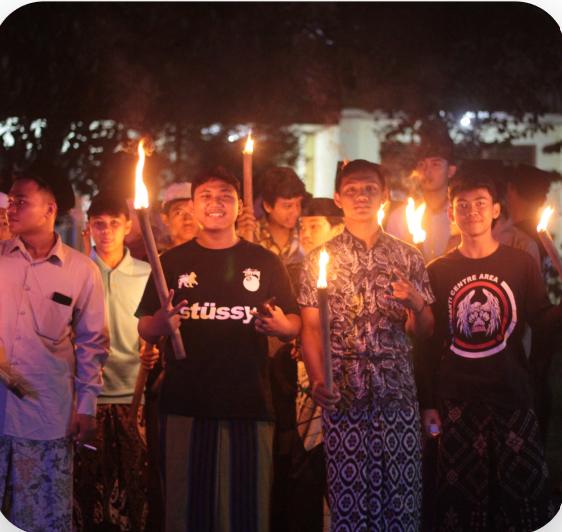
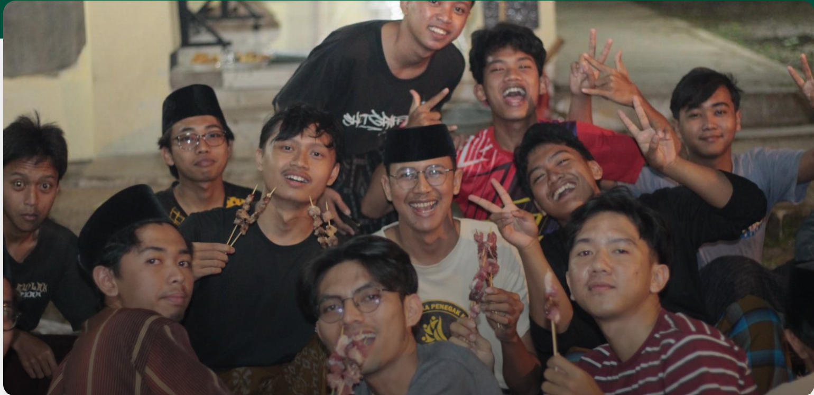
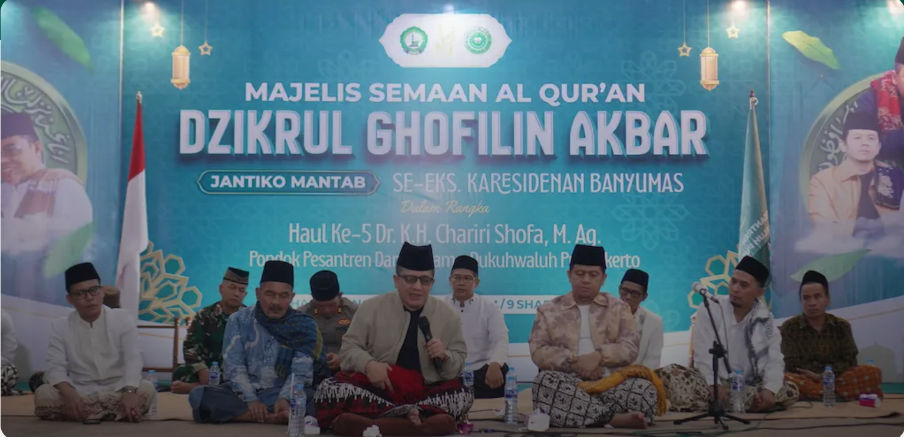

Pondok Pesantren Darussalam Dukuhwaluh Purwokerto menerima kunjungan akademik dan wawancara penelitian dari rombongan dosen Universiti Sains Islam Malaysia (USIM), Malaysia.

Cahaya obor dan lantunan takbir mewarnai suasana malam di lingkungan Pondok Pesantren Darussalam Dukuh Waluh Purwokerto pada Selasa, 26 Mei 2026.

Suasana hangat dan penuh kebersamaan terasa di lingkungan Pondok Pesantren Darussalam Dukuh Waluh Purwokerto pada Rabu malam, 27 Mei 2026.

Pondok Pesantren Darussalam Dukuhwaluh, Purwokerto, menggelar acara Majelis Semaan Al-Qur'an dan Dzikrul Ghofilin Akbar Jantiko Mantab dalam rangka memperingati haul ke-5 Almaghfurlah Dr. KH. Chariri Shofa, M.Ag., pendiri pesantren tersebut.
Pondok Pesantren Darussalam Dukuhwaluh Purwokerto membuka pendaftaran santri baru untuk gelombang 2 tahun ajaran 2026/2027. Pendaftaran ini memberikan kesempatan bagi calon santri dan orang tua untuk mendaftar dan mempersiapkan diri
Berlangganan newsletter untuk mendapatkan informasi kegiatan dan pengumuman terbaru.